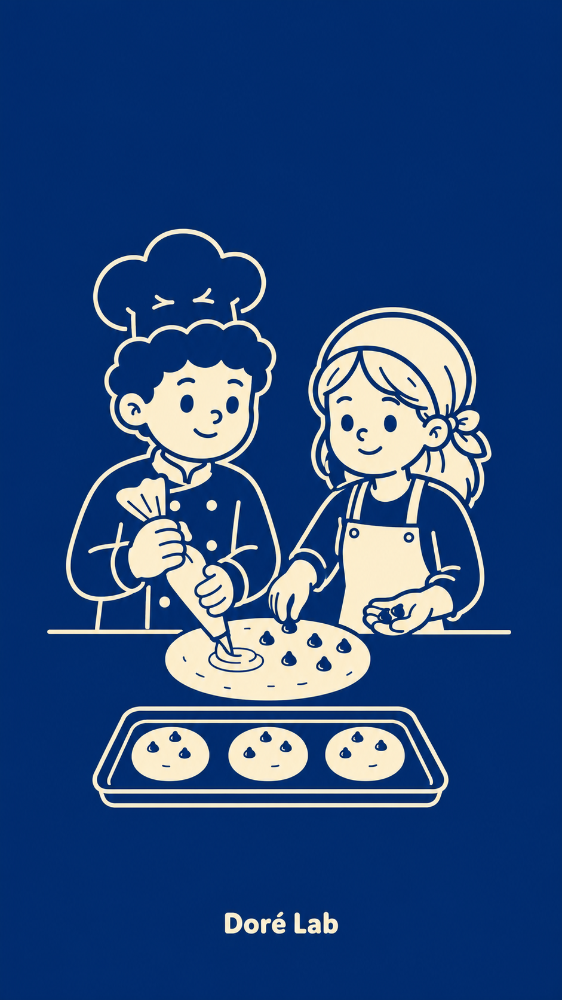

EXPEDIENTE PERSONALIZADO · 2 MINUTOS
El Laboratorio
del Antojo.
Cada antojo tiene su fórmula. Respondé unas preguntas y descubrí tu próxima obsesión de Doré Lab.
← Volver al catálogoFÓRMULA DEL DÍAAPROBADA

Una dosis hecha para vos.Analizamos el antojo, no la ciencia.
PASO 01 · PERFIL
¿Qué perfil de sabor te tienta más?
1 de 4
Elegí la señal que mejor describe tu antojo de hoy.
Elegí una opción para continuar.
CRUZANDO SEÑALES DEL ANTOJO
Preparando tu
fórmula.
Buscamos la coincidencia más rica dentro del catálogo de Doré Lab.
RESULTADO DEL ENSAYO · FÓRMULA PRINCIPAL
Tu fórmula
está lista.
Imagen no disponiblePodés conocer esta fórmula en el catálogo.
OTRAS FÓRMULAS COMPATIBLES
También podrían
tentarte.
TU REGISTRO DE LABORATORIO